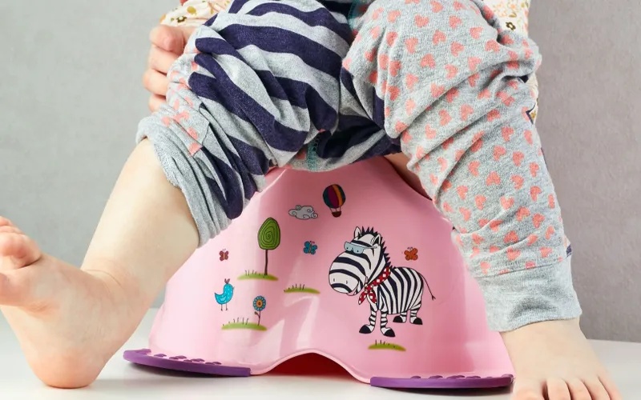

En revanche, si vous êtes face à un petit récidiviste, c’est plus problématique. On risque de vous demander de vous représenter à la rentrée suivante, soit après la Toussaint, ou de passer à mi-temps pour éviter la sieste, un moment privilégié pour les petits pipis incontrôlés
Si vous êtes déjà allocataire, vous n’avez pas de démarche à effectuer, l'allocation est versée automatiquement par la CAF ou la MSA pour les agriculteurs.
Si vous n'êtes pas allocataire, vous devez remplir un dossier et le retourner à votre Caf. Vous pouvez le télécharger et l'imprimer ou le demander à votre Caf.

Enceinte? Avant même d’acheter un test, vous allez sans doute tenter de repérer les fameux signes de grossesse vous indiquant que votre corps se prépare à accueillir un invité de marque. Mais savez-vous les reconnaître?